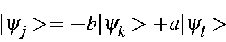
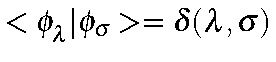
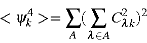

Next: Oscillator Strength
Up: Localized orbitals
Previous: Localized M.O.s
Various methods of localizing M.O.s have been
proposed [61,62,63]. The method
described here is a modification of Von Niessen's
technique, and is ideally suited for semiempirical methods.
For a set of LMOs,
Si<yi4>
is a maximum. Since
SiSj<yi2><yi2>
is a constant,
SiSj<i<yi2><yi2>
must be a minimum.
The operation to localize M.O. consists of a series of binary unitary
transforms of the type:
 =-b\vert\psi_k> +a\vert\psi_l>
\end{displaymath}">
where |yk>
and |yl>
are normal M.O.s, and |yi>
and |yj>
are the LMOs.
The ratio a/b is given by
Note that in normal semiempirical work:

=\delta(\lambda,\sigma)$">.
From this it follows that, given
 ,
,
In order to preserve rotational invariance, all contributions on each atom must be
added together. This gives:
 = \sum_A(\sum_{\lambda\in A}C_{\lambda k}^2)^2 \end{displaymath}">
Next: Oscillator Strength
Up: Localized orbitals
Previous: Localized M.O.s
J. J. P. Stewart
Fujitsu Ltd. 2001